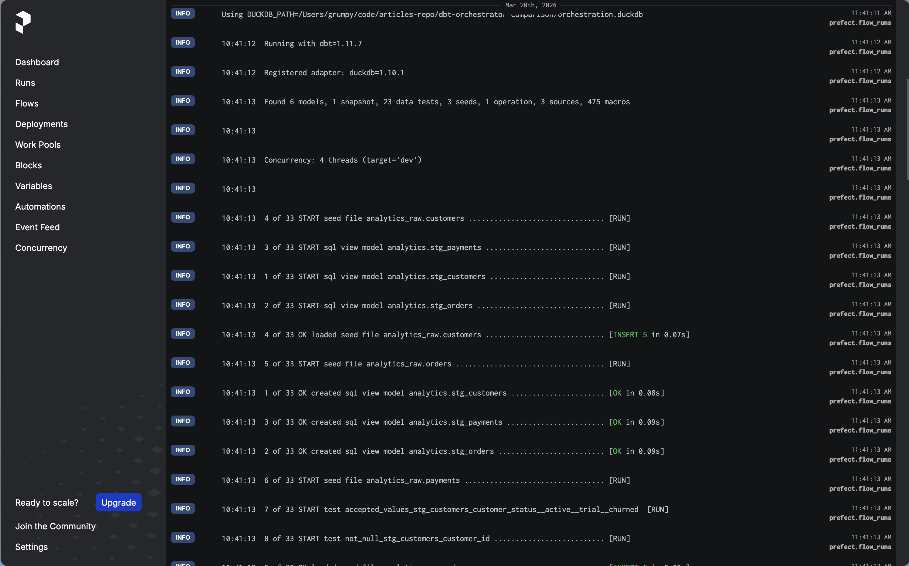

Part 3 of the “Orchestrating dbt without dbt Cloud” series.
Introduction
If Dagster is the most dbt-native orchestrator and Airflow is the most battle-tested, Prefect sits comfortably in the middle ground. It is Python-first, lightweight, and gets you from zero to a working scheduled pipeline faster than either of the other two.
The core Prefect model is simple: you write Python functions, decorate them with @flow or @task, and Prefect handles scheduling, retries, logging, and a web UI. There is no DAG file convention to follow, no manifest to parse, no custom operators to learn. If you know Python, you already know most of what you need.
This makes Prefect a natural fit for teams that want proper orchestration without the operational weight of a full Airflow deployment, and without the steeper learning curve of Dagster’s asset model. The tradeoff is that you get less dbt-native visibility than Dagster. Each dbt invocation is a flow run, not a per-model asset graph. For many teams that is a perfectly acceptable tradeoff.
This article covers how to orchestrate the same dbt scenarios we used in Parts 1 and 2: a daily full build, an hourly smoke check, a source freshness check, and a manual full refresh of an incremental model. The companion repository is at github.com/p-munhoz/dbt-orchestrator-comparison.
All code lives in orchestrators/prefect/.
Dependencies
# orchestrators/prefect/pyproject.toml
[project]
dependencies = [
"prefect>=3.0",
"prefect-dbt>=0.7",
"dbt-core>=1.11",
"dbt-duckdb>=1.10",
]Install from the repo root:
uv sync --project orchestrators/prefectProject Structure
orchestrators/prefect/
├── pyproject.toml
└── flows/
└── dbt_flows.py
Everything lives in a single file. This is intentional: Prefect does not impose any particular project layout, and for a dbt-focused setup there is no reason to spread things across multiple modules.
Running Prefect Locally
Start the Prefect server, which gives you the UI and the API that flow runs report to:
uv run --project orchestrators/prefect prefect server startIn a second terminal, configure the flow runner to point at your local server:
uv run --project orchestrators/prefect \
prefect config set PREFECT_API_URL=http://127.0.0.1:4200/apiSetting PREFECT_API_URL explicitly prevents Prefect from falling back to a temporary ephemeral server when you start a flow process. Without it, you may find that your flow runs do not show up in the UI.
The Prefect UI is available at http://127.0.0.1:4200.
The Core Utility: Invoking dbt
All four flows in this project call dbt as a subprocess. Rather than duplicating the subprocess logic in every flow, it lives in a single _invoke_dbt helper:
import os
import shlex
import subprocess
from pathlib import Path
from prefect import get_run_logger
REPO_ROOT = Path(__file__).resolve().parents[3]
DBT_PROJECT_DIR = REPO_ROOT / "dbt_project"
DEFAULT_DUCKDB_PATH = REPO_ROOT / "orchestration.duckdb"
def _invoke_dbt(args: list[str]) -> None:
logger = get_run_logger()
command = [
"dbt",
*args,
"--project-dir",
str(DBT_PROJECT_DIR),
"--profiles-dir",
str(DBT_PROJECT_DIR),
"--no-partial-parse",
]
env = os.environ.copy()
env.setdefault("DUCKDB_PATH", str(DEFAULT_DUCKDB_PATH))
logger.info("Starting %s", shlex.join(command))
logger.info("Using DUCKDB_PATH=%s", env["DUCKDB_PATH"])
process = subprocess.Popen(
command,
cwd=REPO_ROOT,
env=env,
stdout=subprocess.PIPE,
stderr=subprocess.STDOUT,
text=True,
bufsize=1,
)
assert process.stdout is not None
for line in process.stdout:
logger.info(line.rstrip())
return_code = process.wait()
if return_code != 0:
raise RuntimeError(
f"dbt command failed with exit code {return_code}: {shlex.join(command)}"
)
logger.info("Finished %s", shlex.join(command))A few design choices here worth explaining.
subprocess.Popen with line-by-line streaming means dbt output appears in the Prefect UI in real time as the run progresses, rather than all at once when the command finishes. This makes it much easier to follow what is happening during a long build.
stderr=subprocess.STDOUT merges stderr into stdout. dbt writes most of its output to stderr, so without this merge you would miss the majority of dbt logs in the Prefect UI.
env.setdefault("DUCKDB_PATH", ...) uses setdefault rather than a direct assignment. This means an existing DUCKDB_PATH in the environment takes priority, which makes it easy to override the database path from outside the flow without touching the code.
get_run_logger() is Prefect’s context-aware logger. Using it rather than a plain Python logging.getLogger() ensures that log lines appear in the Prefect UI attached to the correct flow run.
The Four Flows
Daily Build
from prefect import flow
@flow(name="dbt-build", retries=2, retry_delay_seconds=60)
def dbt_build_flow() -> None:
_invoke_dbt(["build"])This is the full dbt build: seeds, models, tests, and snapshots. The retries=2 and retry_delay_seconds=60 parameters tell Prefect to retry the entire flow up to two times with a 60 second wait between attempts if it fails. This covers the most common class of transient failures without any extra configuration.
Smoke Check
@flow(name="dbt-smoke", retries=2, retry_delay_seconds=30)
def dbt_smoke_flow() -> None:
_invoke_dbt(["seed"])
_invoke_dbt(["build", "--selector", "smoke"])Two sequential dbt invocations: seed first to ensure the raw data exists, then build only the staging models using the smoke selector defined in dbt_project/selectors.yml. If the seed fails, the second invocation never runs and the flow is marked as failed.
This is a good pattern for a heartbeat check: fast to run, covers the most critical layer, and gives you an early signal if something is wrong with your environment.
Source Freshness
@flow(name="dbt-source-freshness", retries=1, retry_delay_seconds=30)
def dbt_source_freshness_flow() -> None:
_invoke_dbt(["source", "freshness"])One invocation, one retry. Source freshness checks query the loaded_at field on your source tables and compare it against the thresholds defined in sources.yml. The demo project uses a 24 hour warn threshold and a 72 hour error threshold.
Full Refresh
@flow(name="dbt-fact-orders-full-refresh", retries=1, retry_delay_seconds=30)
def dbt_fact_orders_full_refresh_flow() -> None:
_invoke_dbt(["run", "--select", "fct_orders", "--full-refresh"])A manual flow for forcing a complete rebuild of the fct_orders incremental model. You run this from the Prefect UI or via the CLI when you need to backfill or recover from a bad incremental run.
Prefect Core Concepts
Before getting to scheduling, it is worth taking a step back and mapping out how Prefect thinks about things. The terminology can be confusing at first, especially because some terms mean something slightly different here than they do in Airflow or Dagster.
Flows and Tasks
A flow is the main unit of work in Prefect. It is just a Python function decorated with @flow. It can call other functions, run subprocesses, make API calls, or do anything Python can do. In our case, each dbt scenario (build, smoke, freshness, full refresh) is its own flow.
A task is a smaller unit of work inside a flow, decorated with @task. Tasks get their own run state, logs, and retry logic within a flow run. In this project we do not use tasks directly: the entire dbt invocation is treated as a single unit inside each flow. For more complex pipelines with multiple steps, you would break things into tasks so that a failure in one step does not force a full retry of the whole flow.
The Prefect Server
The Prefect server is the control plane. It stores metadata about flows, deployments, schedules, and run history. It exposes a REST API and the web UI. Critically, it does not execute anything itself. It is a database and a scheduler, not a runner.
This is a key architectural distinction from Airflow, where the scheduler also drives execution. In Prefect, the server says “this run is scheduled” and then waits for something else to pick it up.
Deployments
A deployment is a registered configuration for a flow. It tells the server: “this flow exists, it should run on this schedule, with these parameters, and it should be executed by something that is listening on this work pool.”
A deployment without something to execute it is like a job posting without a candidate. The server knows the job exists and when it should start, but nothing happens until there is a process ready to pick it up. This is exactly what happens the first time you open the UI after registering a deployment: it appears listed but marked as not ready.
Workers and Work Pools
A work pool is a queue that connects deployments (what needs to run) to workers (what actually runs it). A worker is a long-running process that polls a work pool, picks up scheduled runs, and executes them.
For local development, Prefect provides a simpler alternative to the full worker model: flow.serve().
The serve() Model and Why Deployments Are Not Ready by Default
When you first open the Prefect UI after registering a deployment, you will see it listed but marked as not ready. This is not a bug. It is telling you the truth: the deployment exists in the server’s registry, but there is no process currently listening for runs assigned to it.
The moment you run python flows/dbt_flows.py, which calls flow.serve() or serve(), that process registers itself with the server and starts long-polling for runs to execute. The deployment flips to ready because now there is actually something that will pick up scheduled runs when they come due.
Stop that process and the deployment goes back to not ready. No runs will execute until you start it again.
This is fundamentally different from Airflow, where the scheduler process handles everything, or Dagster, where the daemon picks up scheduled jobs automatically once it is running. In Prefect, the execution process is explicitly decoupled from the server, and you are responsible for keeping it alive.
In development this is fine: you run the process in a terminal when you need it. In production you would wrap it in a systemd service, a Docker container, or a Kubernetes deployment to make sure it stays running.
Prefect Server (control plane)
|
| "Run dbt-build-daily is scheduled for 06:00"
|
v
serve() process <-- polls the server every few seconds
|
| "I see a scheduled run, I will execute it"
|
v
dbt build ...
Scheduling with Deployments
With that model in mind, the scheduling code makes more sense:
if __name__ == "__main__":
dbt_build_flow.serve(name="dbt-build-daily", cron="0 6 * * *")flow.serve() does two things at once: it registers the deployment with the cron schedule in the server, and it starts the long-polling loop that will execute runs when they come due. Both happen in the same process.
For multiple scheduled flows, pass them all to serve() so a single process handles all of them:
from prefect.runner import serve
if __name__ == "__main__":
serve(
dbt_build_flow.to_deployment(name="dbt-build-daily", cron="0 6 * * *"),
dbt_smoke_flow.to_deployment(name="dbt-smoke-hourly", cron="0 * * * *"),
dbt_source_freshness_flow.to_deployment(
name="dbt-source-freshness", cron="0 */6 * * *"
),
)This registers all three scheduled flows and starts the executor in one process. The full refresh flow is intentionally left out since it is meant to be triggered manually.
Running the Flows
Start the Prefect server in one terminal:
uv run --project orchestrators/prefect prefect server startStart the flow runner in another:
uv run --project orchestrators/prefect python orchestrators/prefect/flows/dbt_flows.pyYou should see the deployments appear in the Prefect UI under the Deployments tab. From there you can trigger any flow manually or let the scheduler pick them up.
To run a one-off flow without going through the UI:
uv run --project orchestrators/prefect python -c \
"from flows.dbt_flows import dbt_smoke_flow; dbt_smoke_flow()"UI Walkthrough
-
Open
http://127.0.0.1:4200. -
Go to Deployments. You should see
dbt-build-daily,dbt-smoke-hourly, anddbt-source-freshnesslisted. -
Trigger
dbt-smoke-hourlymanually using the “Run” button. Watch the flow run appear in Flow Runs with aRunningstate. -
Click into the run. You will see the real-time dbt logs streaming in as the models build. Each log line from dbt appears as a Prefect log event attached to the run.

-
After it completes, run
dbt-build-dailymanually. The full build takes a bit longer. Watch the state transition fromRunningtoCompleted. -
To test the full refresh, run it directly from the terminal:
uv run --project orchestrators/prefect python -c \
"from flows.dbt_flows import dbt_fact_orders_full_refresh_flow; dbt_fact_orders_full_refresh_flow()"Check the logs to confirm fct_orders was rebuilt with --full-refresh.
A Note on prefect-dbt
The prefect-dbt package is installed as a dependency but not used directly in the flow code. You may wonder why.
prefect-dbt provides DbtCoreOperation, a Prefect task that wraps dbt invocations. It is convenient but it adds an abstraction layer that obscures what is actually happening, and it does not give you streaming logs by default. The subprocess approach used here is more explicit, gives you real-time output in the UI, and does not require learning an additional API surface.
prefect-dbt is worth revisiting if you need tight integration with Prefect Cloud features, or if you want to use DbtCoreOperation to compose smaller tasks within a larger flow that mixes dbt with non-dbt steps.
Things Worth Knowing Before Going to Production
The serve() process must stay running. When you use flow.serve(), the process that calls it is responsible for executing scheduled runs. If it dies, your schedules stop and your deployments go back to not ready. For production you would wrap it in a systemd service, a Docker container, or use a Prefect worker with a work pool instead.
Work pools are the production-grade deployment model. The serve() approach works well for development and simple setups. Prefect’s work pool model, where flows are submitted to a pool and executed by dedicated workers, is more suitable for production because it decouples scheduling from execution, supports horizontal scaling, and lets you run flows on different infrastructure (local processes, Docker containers, Kubernetes pods) without changing flow code.
Prefect Cloud has a generous free tier. If you do not want to self-host the Prefect server, Prefect Cloud is free for individual use and small teams. You swap PREFECT_API_URL for a cloud workspace URL and get a hosted UI, run history, and alerting without managing any infrastructure. The execution still happens on your own machines via a worker or serve() process, but the control plane is managed for you. This makes Prefect arguably the lowest-friction option in the series if you are comfortable with a managed control plane.
Flow-level retries vs task-level retries. The retry logic in this implementation is at the flow level: if the flow fails, the entire flow retries, including any dbt invocations that already succeeded. For the demo project this is fine. For a more complex flow with many sequential dbt calls, you would want to break things into Prefect tasks and apply retries at the task level to avoid redundant work.
Pros and Cons
Pros
- Lowest setup friction in the series:
pip install prefect, runprefect server start, write a Python function - Python-first with no DAG file conventions or special abstractions to learn upfront
- Real-time log streaming in the UI out of the box with the subprocess approach
- Prefect Cloud free tier removes the need to manage infrastructure entirely
- Flow and retry logic is just Python, which makes it easy to test and version
Cons
- Less dbt-native visibility than Dagster: you get flow-level status, not per-model asset status
- The
serve()model requires a long-running process, which adds operational overhead in production - Smaller operator ecosystem than Airflow for non-dbt tasks
- Work pools and workers add complexity once you move beyond the simple
serve()model - Prefect has changed its API significantly between major versions; be careful with tutorials that target Prefect 2.x if you are running Prefect 3.x
When to Choose Prefect
Prefect is a strong choice if:
- You want proper orchestration with a UI and scheduling without the infrastructure overhead of Airflow
- Your team is comfortable with Python but has no interest in learning Dagster’s asset model
- You are open to Prefect Cloud and want zero-infrastructure scheduling for a modest workload
- Your pipeline mixes dbt with other Python-based tasks and you want everything in one framework
Consider alternatives if:
- You need per-model observability and a visual asset lineage graph (Dagster is the better fit)
- You already have Airflow running and the switching cost is hard to justify
- Your dbt project is simple enough that a scheduled GitHub Actions workflow would genuinely be sufficient
What’s Next
This is part 3 of the series. The final two articles are:
- Part 4: Orchestrating dbt with GitHub Actions
- Part 5: The full comparison with a decision framework
The full repository is at github.com/p-munhoz/dbt-orchestrator-comparison.
Subscribe to the newsletter to get Part 4 when it drops.
Series: Orchestrating dbt without dbt Cloud ← Part 2: Airflow + Cosmos · Part 4: GitHub Actions → · See the full comparison →